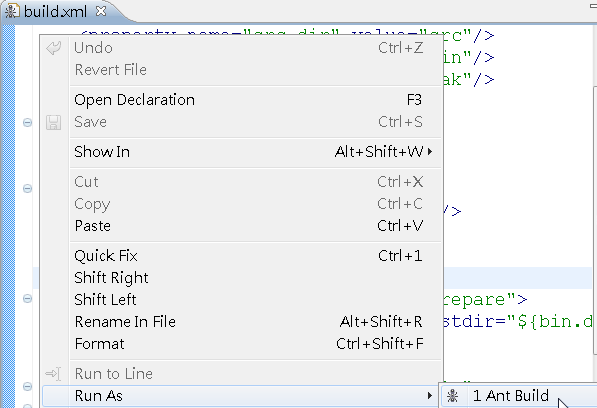
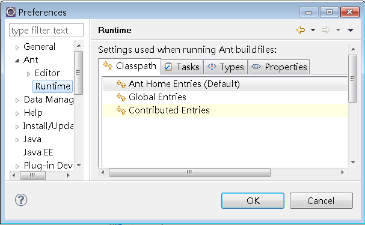
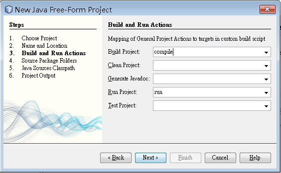

Ant的全名是"Another Neat Tool"， 是由 James Duncan Davidson在Make工具無法滿足他的需求下所撰寫出來的構建（build）工具，目前由Apache Software Foundation持續進行開發，根據官方網站上的FAQ中"What is Apache Ant"的回答：
Ant
is a Java-based build tool. In theory, it is kind of like Make, without
Make's wrinkles and with the full portability of pure Java code.
對於沒有使用過Make工具的初學者來說，想像一下如何管理原始碼？自動處理CLASSPATH的問題？在編譯之後將編譯過後 的檔案指定至某個目 錄？包裝您的程式庫？自動執行測試並儲存測試報告？這一切都可以透過Ant來完成！您不用不斷的使用javac、copy、cd、 java等指令來達成這些目的，只要撰寫好構建文件（buildfile），一個以XML組織的文件檔案，之後只要下達ant指令，所 有的一切就可以完成。
Ant與IDE並不衝突。IDE的重點在於專案管理、提供使用者撰寫程式時的輔助（像是程式碼自動提示、自動產生等）、與伺服器的整合與設定等，Ant則 是提供數個任務（操作）的組織與自動化，在IDE上可能要數個操作才能達到的目的，例如清除（Clean）、建構（Build）、部署（Deploy）， 則可透過Ant來完成。事實上，有些IDE的選項操作，就可整合Ant來完成（例如NetBeans）。
簡單的歸納一下Ant可以幫您自動完成的任務：
- 編譯Java原始碼
- 建立jar、war、zip檔案
- 自動測試與生成報告
- 從CVS等管理系統取得原始碼
- 其它Ant擴充任務...
你可以至 Ant的官方網站 下載Ant，要開始使用Ant，在文字模式下，必須設定JAVA_HOME、ANT_HOME與PATH等相關環境。例如在Windows中：
SET JAVA_HOME=C:\Program Files\Java\jdk1.6.0
SET ANT_HOME=C:\Winware\apache-ant-1.8.2
SET PATH=C:\Winware\apache-ant-1.8.2\bin;%PATH%
SET ANT_HOME=C:\Winware\apache-ant-1.8.2
SET PATH=C:\Winware\apache-ant-1.8.2\bin;%PATH%
你也可以在系統環境變數中加以設定，以省去每次重開文字模式都要設定的麻煩。在主流IDE中，目前都已內建Ant支援。例如在 Eclipse中要使用Ant，只要直接建立一個build.xml，在當中撰寫相關設定，即可在build.xml上按右鍵，執行「Run As/Ant Build」指令：

若要改變預設的Ant執行環境，則可以執行選單上「Windows/Preferences」，在對話方塊中選擇「Ant/Runtime」，即可設定你新下載的Ant執行環境。

如果你使用NetBeans，還可以使用Free-Form Project，在建立專案的過程中，可以讓你指定建構任務：

這可以讓你將Ant的任務與NetBeans的選單中，「Run」、「Clean」、「Build」、「Clean and Build」等指令的動作結合在一起，事實上，NetBeans本身的其它專案，也是建立預設的build.xml來執行這些任務。